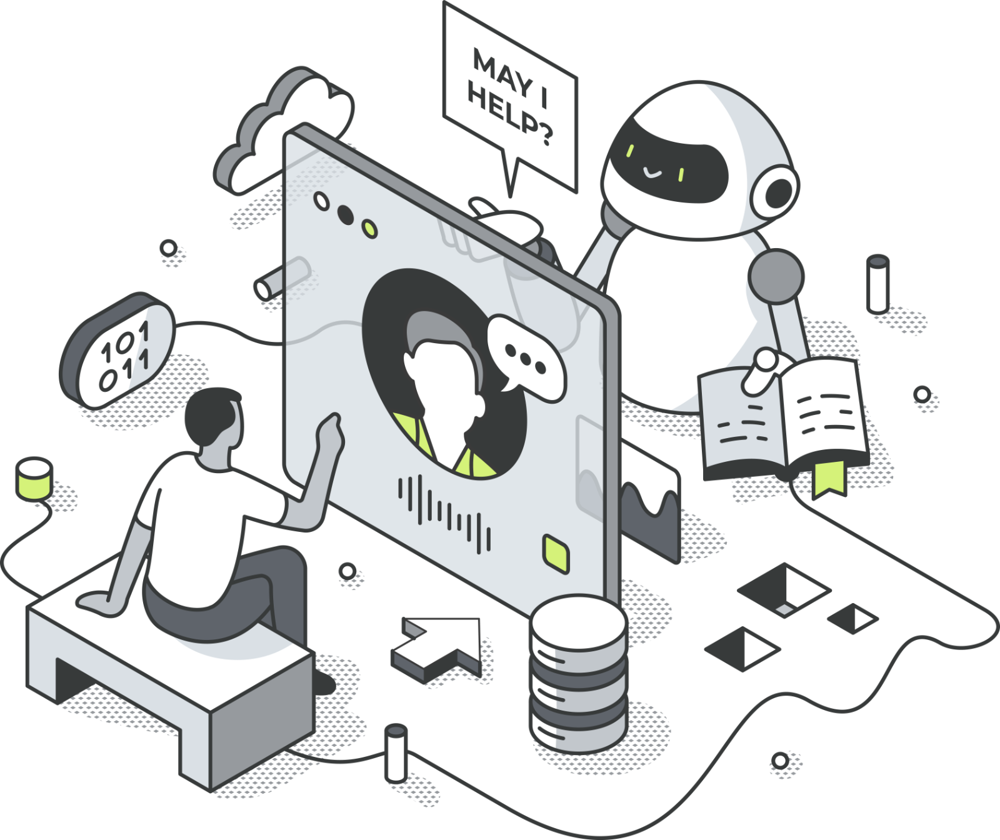

<!doctype html>
<html lang="de">
<head>
<meta charset="utf-8" />
<meta name="viewport" content="width=device-width, initial-scale=1" />
<title>Voice AI — Funnelspace</title>
<meta name="description" content="Hör dir einen echten Anruf an: Die Funnelspace Voice AI nimmt ab, klärt das Anliegen, qualifiziert und bucht den Termin — und legt danach alles im CRM ab." />
<link rel="stylesheet" href="colors_and_type.css" />
<link rel="stylesheet" href="site.css" />
<style>
/* ══ Voice AI v2 — die Seite ist ein Anruf ══════════════ */
.v2{background:var(--fs-paper)}
a{color:var(--fs-ink)}
a:hover{color:var(--fs-lime-deep)}

/* ── Stage: dunkler Anruf-Raum ─────────────────────────── */
.v2-stage{background:var(--fs-ink);color:#fff;position:relative;overflow:hidden;padding:72px 40px 88px}
.v2-stage::before{content:"";position:absolute;inset:0;background-image:radial-gradient(rgba(215,240,120,.06) 1px,transparent 1.2px);background-size:8px 8px;pointer-events:none}
.v2-stage__inner{position:relative;max-width:1280px;margin:0 auto;display:grid;grid-template-columns:0.92fr 1.08fr;gap:64px;align-items:start}
.v2-kicker{display:inline-flex;align-items:center;gap:8px;font-family:var(--font-mono);font-size:11px;letter-spacing:.14em;text-transform:uppercase;color:var(--fs-lime);border:1px solid rgba(215,240,120,.3);background:rgba(215,240,120,.08);padding:6px 12px;border-radius:var(--radius-pill)}
.v2-kicker i{width:6px;height:6px;border-radius:50%;background:var(--fs-lime);animation:v2-blink 1.6s var(--ease-in-out) infinite}
@keyframes v2-blink{0%,100%{opacity:1}50%{opacity:.2}}
.v2-stage h1{margin-top:26px;font-family:var(--font-display);font-size:clamp(42px,4.9vw,68px);font-weight:800;line-height:1.03;letter-spacing:-.035em;color:#fff;text-wrap:balance}
.v2-stage h1 em{font-style:normal;color:var(--fs-lime)}
.v2-stage__lead{margin-top:22px;font-size:19px;line-height:1.55;color:rgba(255,255,255,.68);max-width:460px}
.v2-stage__cta{display:flex;gap:12px;margin-top:30px;flex-wrap:wrap}
.v2-meta{margin-top:38px;display:grid;grid-template-columns:repeat(3,auto);gap:26px;justify-content:start;border-top:1px solid rgba(255,255,255,.12);padding-top:22px}
.v2-meta__n{font-family:var(--font-display);font-size:26px;font-weight:800;letter-spacing:-.02em;color:var(--fs-lime)}
.v2-meta__l{font-size:11.5px;line-height:1.35;color:rgba(255,255,255,.5);margin-top:4px;max-width:120px}

/* ── Player ────────────────────────────────────────────── */
.v2-player{background:var(--fs-paper);border-radius:var(--radius-xl);box-shadow:0 44px 90px -24px rgba(0,0,0,.5);overflow:hidden;display:flex;flex-direction:column}
.v2-player__bar{display:flex;align-items:center;gap:14px;padding:16px 20px;border-bottom:1px solid var(--border-1);background:#fff}
.v2-play{width:46px;height:46px;border-radius:50%;border:none;background:var(--fs-lime);color:var(--fs-lime-ink);display:grid;place-items:center;cursor:pointer;flex-shrink:0;transition:transform var(--dur-fast) var(--ease-out),background var(--dur-fast)}
.v2-play:hover{background:var(--fs-lime-deep)}
.v2-play:active{transform:scale(.97)}
.v2-play:focus-visible{outline:none;box-shadow:0 0 0 3px rgba(215,240,120,.5)}
.v2-caller{flex:1;min-width:0}
.v2-caller__n{font-family:var(--font-display);font-weight:700;font-size:15px;letter-spacing:-.01em}
.v2-caller__m{font-size:11.5px;color:var(--fg-3);margin-top:2px;font-family:var(--font-mono)}
.v2-timer{font-family:var(--font-mono);font-size:13px;color:var(--fs-ink);letter-spacing:.02em}
.v2-wave{display:flex;align-items:center;gap:2px;height:52px;padding:12px 20px;background:#fff;border-bottom:1px solid var(--border-1);cursor:pointer}
.v2-wave i{flex:1;border-radius:1px;background:var(--fs-gray-200);transition:background var(--dur-fast) linear}
.v2-wave i.on{background:var(--fs-ink)}
.v2-wave i.cur{background:var(--fs-lime-deep)}
.v2-chapters{display:flex;gap:0;background:#fff;border-bottom:1px solid var(--border-1);overflow-x:auto}
.v2-chapter{flex:1;min-width:104px;border:none;background:none;border-right:1px solid var(--border-1);padding:11px 12px;text-align:left;cursor:pointer;transition:background var(--dur-fast)}
.v2-chapter:last-child{border-right:none}
.v2-chapter:hover{background:var(--fs-paper)}
.v2-chapter.on{background:var(--fs-lime)}
.v2-chapter__t{font-family:var(--font-mono);font-size:10.5px;color:var(--fg-3);letter-spacing:.04em}
.v2-chapter.on .v2-chapter__t{color:rgba(47,58,0,.7)}
.v2-chapter__l{font-size:12px;font-weight:700;color:var(--fs-ink);margin-top:3px;letter-spacing:-.01em}
.v2-script{padding:20px;display:flex;flex-direction:column;justify-content:flex-end;gap:12px;min-height:360px;overflow:hidden;background:var(--fs-paper);background-image:radial-gradient(var(--fs-gray-200) 1px,transparent 1.2px);background-size:12px 12px}
.v2-line{display:grid;grid-template-columns:44px 1fr;gap:12px;opacity:0;transform:translateY(6px);transition:opacity var(--dur-med) var(--ease-out),transform var(--dur-med) var(--ease-out)}
.v2-line.in{opacity:1;transform:none}
.v2-line__t{font-family:var(--font-mono);font-size:10.5px;color:var(--fg-3);padding-top:7px}
.v2-line__b{border-radius:12px;padding:10px 13px;font-size:14px;line-height:1.5;max-width:min(92%,520px)}
.v2-line--ai .v2-line__b{background:var(--fs-ink);color:#fff;border-bottom-left-radius:4px}
.v2-line--caller .v2-line__b{background:#fff;border:1px solid var(--border-1);color:var(--fs-ink);border-bottom-right-radius:4px;justify-self:end}
.v2-line__who{font-family:var(--font-mono);font-size:9.5px;letter-spacing:.1em;text-transform:uppercase;opacity:.55;margin-bottom:5px}
.v2-typing{display:inline-flex;gap:3px;align-items:center}
.v2-typing i{width:5px;height:5px;border-radius:50%;background:currentColor;animation:v2-dot 1.1s var(--ease-in-out) infinite}
.v2-typing i:nth-child(2){animation-delay:.15s}
.v2-typing i:nth-child(3){animation-delay:.3s}
@keyframes v2-dot{0%,100%{opacity:.25}50%{opacity:1}}
.v2-player__foot{border-top:1px solid var(--border-1);background:#fff;padding:14px 20px;display:flex;flex-direction:column;gap:8px}
.v2-event{display:flex;align-items:center;gap:10px;font-size:12.5px;color:var(--fs-ink);opacity:0;transform:translateY(4px);transition:opacity var(--dur-med) var(--ease-out),transform var(--dur-med) var(--ease-out)}
.v2-event.in{opacity:1;transform:none}
.v2-event__i{width:24px;height:24px;border-radius:50%;background:var(--fs-gray-100);display:grid;place-items:center;flex-shrink:0}
.v2-event__i svg{width:13px;height:13px;color:var(--fs-ink-soft)}
.v2-event--key .v2-event__i{background:var(--fs-lime)}
.v2-event--key .v2-event__i svg{color:var(--fs-lime-ink)}
.v2-event b{font-weight:700}
.v2-event__hint{font-family:var(--font-mono);font-size:10.5px;color:var(--fg-3);margin-left:auto;white-space:nowrap}
.v2-player__idle{font-family:var(--font-mono);font-size:11px;color:var(--fg-3);letter-spacing:.04em}

/* ── Sektionen ─────────────────────────────────────────── */
.v2-sec{padding:104px 40px}
.v2-sec--white{background:var(--fs-white)}
.v2-sec__inner{max-width:1280px;margin:0 auto}
.v2-head{display:grid;grid-template-columns:1fr 1fr;gap:56px;align-items:end;margin-bottom:56px}
.v2-head--center{grid-template-columns:1fr;max-width:720px;margin:0 auto 56px;text-align:center}
.v2-tag{font-family:var(--font-mono);font-size:11px;letter-spacing:.14em;text-transform:uppercase;color:var(--fg-3);display:block;margin-bottom:14px}
.v2-head h2{font-family:var(--font-display);font-size:clamp(32px,3.5vw,50px);font-weight:800;letter-spacing:-.032em;line-height:1.07;text-wrap:balance}
.v2-head h2 em{font-style:normal;background:var(--fs-lime);color:var(--fs-lime-ink);padding:0 8px;border-radius:6px}
.v2-head p{font-size:17.5px;color:var(--fg-2);line-height:1.6;max-width:520px}
.v2-head--center p{margin:16px auto 0}

/* Was sie sagt, wenn … (Zitat-Karten) */
.v2-says{display:grid;grid-template-columns:repeat(3,1fr);gap:20px}
.v2-say{background:var(--fs-white);border:1px solid var(--border-1);border-radius:var(--radius-lg);padding:28px;display:flex;flex-direction:column;gap:16px;transition:transform var(--dur-med) var(--ease-out),box-shadow var(--dur-med) var(--ease-out)}
.v2-say:hover{transform:translateY(-2px);box-shadow:var(--shadow-md)}
.v2-say__sit{font-family:var(--font-mono);font-size:11px;letter-spacing:.1em;text-transform:uppercase;color:var(--fg-3)}
.v2-say__q{font-family:var(--font-display);font-size:19px;font-weight:600;line-height:1.4;letter-spacing:-.015em;color:var(--fs-ink);border-left:2px solid var(--fs-lime);padding-left:16px}
.v2-say__d{font-size:14px;color:var(--fg-2);line-height:1.55;margin-top:auto}
.v2-say--ink{background:var(--fs-ink);border-color:var(--fs-ink)}
.v2-say--ink .v2-say__q{color:#fff;border-left-color:var(--fs-lime)}
.v2-say--ink .v2-say__sit{color:rgba(255,255,255,.45)}
.v2-say--ink .v2-say__d{color:rgba(255,255,255,.62)}

/* Stimm-Wähler */
.v2-voice{display:grid;grid-template-columns:0.85fr 1.15fr;gap:56px;align-items:center}
.v2-voice__ctrl{display:flex;flex-direction:column;gap:26px}
.v2-ctrl__l{font-family:var(--font-mono);font-size:11px;letter-spacing:.12em;text-transform:uppercase;color:var(--fg-3);margin-bottom:12px}
.v2-voices{display:flex;flex-direction:column;gap:8px}
.v2-vbtn{display:flex;align-items:center;gap:14px;text-align:left;background:var(--fs-white);border:1px solid var(--border-1);border-radius:var(--radius-md);padding:13px 16px;cursor:pointer;font-family:var(--font-sans);transition:border-color var(--dur-fast),background var(--dur-fast),transform var(--dur-fast) var(--ease-out)}
.v2-vbtn:hover{transform:translateY(-1px)}
.v2-vbtn.on{border:2px solid var(--border-strong);background:var(--fs-lime)}
.v2-vbtn__n{font-family:var(--font-display);font-weight:700;font-size:15px;letter-spacing:-.01em}
.v2-vbtn__d{font-size:12.5px;color:var(--fg-2);margin-top:2px}
.v2-vbtn.on .v2-vbtn__d{color:rgba(47,58,0,.7)}
.v2-vbtn__w{display:flex;align-items:center;gap:2px;height:22px;width:52px;margin-left:auto;flex-shrink:0}
.v2-vbtn__w i{flex:1;background:var(--fs-gray-300);border-radius:1px}
.v2-vbtn.on .v2-vbtn__w i{background:var(--fs-lime-ink)}
.v2-tones{display:flex;gap:8px;flex-wrap:wrap}
.v2-tone{border:1px solid var(--border-1);background:var(--fs-white);border-radius:var(--radius-pill);padding:8px 15px;font-size:13px;font-weight:600;cursor:pointer;font-family:var(--font-sans);color:var(--fs-ink);transition:background var(--dur-fast),border-color var(--dur-fast)}
.v2-tone.on{background:var(--fs-ink);color:#fff;border-color:var(--fs-ink)}
.v2-voice__out{background:var(--fs-ink);border-radius:var(--radius-xl);padding:44px 44px 38px;position:relative;overflow:hidden}
.v2-voice__out::before{content:"";position:absolute;inset:0;background-image:radial-gradient(rgba(215,240,120,.07) 1px,transparent 1.2px);background-size:8px 8px}
.v2-voice__label{position:relative;font-family:var(--font-mono);font-size:10.5px;letter-spacing:.12em;text-transform:uppercase;color:rgba(255,255,255,.45)}
.v2-voice__say{position:relative;margin-top:20px;font-family:var(--font-display);font-size:clamp(22px,2.3vw,30px);font-weight:600;line-height:1.35;letter-spacing:-.02em;color:#fff;text-wrap:pretty}
.v2-voice__say mark{background:var(--fs-lime);color:var(--fs-lime-ink);padding:0 6px;border-radius:4px}
.v2-voice__foot{position:relative;margin-top:26px;display:flex;gap:20px;flex-wrap:wrap;font-family:var(--font-mono);font-size:11px;color:rgba(255,255,255,.45)}

/* Danach: Übergabe */
.v2-after{display:grid;grid-template-columns:repeat(4,1fr);gap:1px;background:var(--border-1);border:1px solid var(--border-1);border-radius:var(--radius-lg);overflow:hidden}
.v2-after__c{background:var(--fs-white);padding:32px 26px;display:flex;flex-direction:column;gap:12px}
.v2-after__t{font-family:var(--font-mono);font-size:10.5px;letter-spacing:.1em;color:var(--fg-3)}
.v2-after__i{width:38px;height:38px;border-radius:var(--radius-sm);background:var(--fs-gray-100);display:grid;place-items:center}
.v2-after__i svg{width:19px;height:19px;color:var(--fs-ink)}
.v2-after__c:first-child .v2-after__i{background:var(--fs-lime);color:var(--fs-lime-ink)}
.v2-after__c h3{font-family:var(--font-display);font-size:18px;font-weight:700;letter-spacing:-.01em}
.v2-after__c p{font-size:14px;color:var(--fg-2);line-height:1.55}
.v2-after__c a{font-size:13px;font-weight:700;text-decoration:none;display:inline-flex;align-items:center;gap:5px;margin-top:auto;transition:gap var(--dur-fast) var(--ease-out)}
.v2-after__c a:hover{gap:9px}

/* Grenzen / Ehrlichkeit */
.v2-limits{display:grid;grid-template-columns:1fr 1fr;gap:20px}
.v2-limit{border:2px solid var(--border-strong);border-radius:var(--radius-lg);padding:26px 28px;background:var(--fs-white)}
.v2-limit h4{font-family:var(--font-display);font-size:18px;font-weight:700;letter-spacing:-.01em;display:flex;align-items:center;gap:10px}
.v2-limit h4 svg{width:18px;height:18px;flex-shrink:0;color:var(--fs-lime-deep)}
.v2-limit p{font-size:14.5px;color:var(--fg-2);line-height:1.6;margin-top:10px}

/* Setup-Schritte */
.v2-setup{display:grid;grid-template-columns:.82fr 1.18fr;gap:56px;align-items:center}
.v2-art{background:var(--fs-paper);background-image:radial-gradient(var(--fs-gray-300) 1px,transparent 1.2px);background-size:10px 10px;border:1px solid var(--border-1);border-radius:var(--radius-xl);padding:32px;display:grid;place-items:center}
.v2-art img{max-width:100%;object-fit:contain}
.v2-steps{display:grid;grid-template-columns:1fr;gap:30px}
.v2-step{padding:0 0 0 24px;border-left:2px solid var(--border-1)}
.v2-step__n{font-family:var(--font-mono);font-size:12px;color:var(--fs-lime-deep);letter-spacing:.1em}
.v2-step h3{font-family:var(--font-display);font-size:22px;font-weight:700;letter-spacing:-.015em;margin-top:12px}
.v2-step p{font-size:15px;color:var(--fg-2);line-height:1.6;margin-top:10px}
.v2-step__time{font-family:var(--font-mono);font-size:11px;color:var(--fg-3);margin-top:14px;display:block}

/* FAQ */
.v2-faq{max-width:860px;margin:0 auto}
.v2-faq__i{border-bottom:1px solid var(--border-1)}
.v2-faq__i:first-child{border-top:1px solid var(--border-1)}
.v2-faq__b{width:100%;background:none;border:none;cursor:pointer;display:flex;justify-content:space-between;align-items:center;gap:20px;padding:24px 0;text-align:left;font-family:var(--font-display);font-size:18px;font-weight:600;letter-spacing:-.012em;color:var(--fs-ink)}
.v2-faq__ic{width:28px;height:28px;border-radius:50%;background:var(--fs-gray-100);flex-shrink:0;display:grid;place-items:center;font-size:17px;transition:background var(--dur-fast),transform var(--dur-med) var(--ease-out)}
.v2-faq__i.open .v2-faq__ic{background:var(--fs-lime);transform:rotate(45deg)}
.v2-faq__a{font-size:15px;color:var(--fg-2);line-height:1.65;overflow:hidden;max-height:0;transition:max-height var(--dur-slow) var(--ease-out),padding var(--dur-slow) var(--ease-out)}
.v2-faq__i.open .v2-faq__a{max-height:420px;padding-bottom:24px}
.v2-note{max-width:860px;margin:26px auto 0;font-family:var(--font-mono);font-size:11.5px;line-height:1.6;color:var(--fg-3);text-align:center}

/* Final */
.v2-final{background:var(--fs-ink);padding:100px 40px;position:relative;overflow:hidden}
.v2-final::before{content:"";position:absolute;inset:0;background-image:radial-gradient(rgba(215,240,120,.06) 1px,transparent 1.2px);background-size:8px 8px}
.v2-final__inner{position:relative;max-width:1280px;margin:0 auto;display:grid;grid-template-columns:1.1fr .9fr;gap:64px;align-items:center}
.v2-final h2{font-family:var(--font-display);font-size:clamp(34px,3.9vw,54px);font-weight:800;letter-spacing:-.035em;color:#fff;line-height:1.05;text-wrap:balance}
.v2-final h2 em{font-style:normal;color:var(--fs-lime)}
.v2-final p{margin-top:16px;font-size:17.5px;color:rgba(255,255,255,.6);max-width:440px}
.v2-final__btns{display:flex;gap:12px;margin-top:32px;flex-wrap:wrap}
.v2-dial{background:rgba(255,255,255,.05);border:1px solid rgba(255,255,255,.14);border-radius:var(--radius-lg);padding:28px}
.v2-dial__l{font-family:var(--font-mono);font-size:10.5px;letter-spacing:.12em;text-transform:uppercase;color:rgba(255,255,255,.45)}
.v2-dial__n{font-family:var(--font-display);font-size:30px;font-weight:800;letter-spacing:-.02em;color:#fff;margin-top:10px}
.v2-dial__d{font-size:13.5px;color:rgba(255,255,255,.55);line-height:1.55;margin-top:10px}
.v2-dial__rows{margin-top:20px;padding-top:18px;border-top:1px solid rgba(255,255,255,.12);display:flex;flex-direction:column;gap:9px}
.v2-dial__row{display:flex;justify-content:space-between;gap:16px;font-size:12.5px;color:rgba(255,255,255,.6)}
.v2-dial__row b{color:#fff;font-family:var(--font-mono);font-size:11.5px}

@media (prefers-reduced-motion:reduce){.v2-typing i,.v2-kicker i{animation:none}}
@media (max-width:1080px){
.v2-stage__inner{grid-template-columns:1fr;gap:48px}
.v2-says{grid-template-columns:1fr}
.v2-voice{grid-template-columns:1fr;gap:36px}
.v2-after{grid-template-columns:1fr 1fr}
.v2-setup{grid-template-columns:1fr;gap:36px}
.v2-head{grid-template-columns:1fr;gap:20px;align-items:start}
.v2-final__inner{grid-template-columns:1fr;gap:40px}
.v2-limits{grid-template-columns:1fr}
}
@media (max-width:768px){
.v2-stage{padding:56px 20px 64px}
.v2-sec{padding:72px 20px}
.v2-final{padding:72px 20px}
.v2-meta{grid-template-columns:1fr 1fr;gap:18px}
.v2-after{grid-template-columns:1fr}
.v2-script{min-height:300px}
.v2-line{grid-template-columns:38px 1fr;gap:8px}
.nav__links{display:none}
}
</style>
</head>
<body class="v2">
<div id="root"></div>
<script src="https://unpkg.com/react@18.3.1/umd/react.development.js" integrity="sha384-hD6/rw4ppMLGNu3tX5cjIb+uRZ7UkRJ6BPkLpg4hAu/6onKUg4lLsHAs9EBPT82L" crossorigin="anonymous"></script>
<script src="https://unpkg.com/react-dom@18.3.1/umd/react-dom.development.js" integrity="sha384-u6aeetuaXnQ38mYT8rp6sbXaQe3NL9t+IBXmnYxwkUI2Hw4bsp2Wvmx4yRQF1uAm" crossorigin="anonymous"></script>
<script src="https://unpkg.com/@babel/standalone@7.29.0/babel.min.js" integrity="sha384-m08KidiNqLdpJqLq95G/LEi8Qvjl/xUYll3QILypMoQ65QorJ9Lvtp2RXYGBFj1y" crossorigin="anonymous"></script>
<script type="text/babel" src="Nav.jsx"></script>
<script type="text/babel" src="Footer.jsx"></script>
<script type="text/babel">
const { useState, useEffect, useRef } = React;

const Icon = ({ d, size = 20 }) => (
  <svg viewBox="0 0 24 24" width={size} height={size} fill="none" stroke="currentColor" strokeWidth="1.75" strokeLinecap="round" strokeLinejoin="round">{d}</svg>
);
const IPlay = ({size=18}) => <Icon size={size} d={<polygon points="7 4 20 12 7 20 7 4" fill="currentColor" stroke="none"/>} />;
const IPause = ({size=18}) => <Icon size={size} d={<><rect x="7" y="4" width="3.5" height="16" rx="1" fill="currentColor" stroke="none"/><rect x="13.5" y="4" width="3.5" height="16" rx="1" fill="currentColor" stroke="none"/></>} />;
const ICal = ({size}) => <Icon size={size} d={<><rect x="3" y="4" width="18" height="18" rx="2"/><line x1="16" y1="2" x2="16" y2="6"/><line x1="8" y1="2" x2="8" y2="6"/><line x1="3" y1="10" x2="21" y2="10"/></>} />;
const IMail = ({size}) => <Icon size={size} d={<><rect x="2" y="4" width="20" height="16" rx="2"/><path d="M22 7l-10 7L2 7"/></>} />;
const IUser = ({size}) => <Icon size={size} d={<><path d="M20 21v-2a4 4 0 0 0-4-4H8a4 4 0 0 0-4 4v2"/><circle cx="12" cy="7" r="4"/></>} />;
const IDoc = ({size}) => <Icon size={size} d={<><path d="M14 2H6a2 2 0 0 0-2 2v16a2 2 0 0 0 2 2h12a2 2 0 0 0 2-2V8z"/><polyline points="14 2 14 8 20 8"/></>} />;
const ICheck = ({size=18}) => <Icon size={size} d={<polyline points="20 6 9 17 4 12"/>} />;
const IArrow = () => <Icon size={15} d={<><line x1="5" y1="12" x2="19" y2="12"/><polyline points="12 5 19 12 12 19"/></>} />;

/* ── Der Anruf ─────────────────────────────────────────── */
const CALL = [
  { t: 0,  s: 'ai',     x: 'Hi, hier ist der digitale Assistent von Nadine. Ich nehme ab, wenn sie im Coaching sitzt — worum geht’s bei dir?' },
  { t: 9,  s: 'caller', x: 'Ich hätte eine Frage zum Coaching-Programm. Kann man da jederzeit einsteigen?' },
  { t: 16, s: 'ai',     x: 'Der nächste Start ist der 6. Oktober, Einstieg geht bis eine Woche vorher. Willst du vorher mit Nadine sprechen?' },
  { t: 26, s: 'caller', x: 'Ja, gern.' },
  { t: 29, s: 'ai',     x: 'Dann zwei kurze Fragen, damit das Gespräch was bringt: Arbeitest du schon selbstständig?' },
  { t: 37, s: 'caller', x: 'Seit zwei Jahren, Ernährungsberatung.' },
  { t: 42, s: 'ai',     x: 'Und was willst du in den nächsten 90 Tagen erreichen?' },
  { t: 47, s: 'caller', x: 'Mehr Anfragen — ohne jeden Tag auf Instagram zu sein.' },
  { t: 55, s: 'ai',     x: 'Verstanden. Nadine hat Donnerstag 10:00 oder Freitag 14:30 frei. Was passt besser?' },
  { t: 64, s: 'caller', x: 'Donnerstag.' },
  { t: 67, s: 'ai',     x: 'Gebucht. Bestätigung kommt gleich per Mail, Erinnerung am Mittwoch. Eine Frage kann ich dir nicht beantworten — Ratenzahlung. Die klärt Nadine im Gespräch.' },
  { t: 82, s: 'caller', x: 'Perfekt, danke.' },
  { t: 85, s: 'ai',     x: 'Gern. Bis Donnerstag.' },
];
const DURATION = 92;
const CHAPTERS = [
  { t: 0,  l: 'Begrüßung' },
  { t: 16, l: 'Auskunft' },
  { t: 29, l: 'Qualifizierung' },
  { t: 55, l: 'Terminbuchung' },
  { t: 67, l: 'Übergabe' },
];
const EVENTS = [
  { t: 67, i: <ICal size={13}/>, key: true, x: <><b>Termin gebucht</b> — Do, 10:00 · 30 Min.</>, h: 'Kalender' },
  { t: 70, i: <IMail size={13}/>, x: <><b>Bestätigung + Erinnerung</b> versendet</>, h: 'Sequenz' },
  { t: 74, i: <IUser size={13}/>, x: <><b>Kontakt angelegt</b> · Tag „Warm", Deal offen</>, h: 'CRM' },
  { t: 88, i: <IDoc size={13}/>, x: <><b>Transkript + Aufgabe</b> „Ratenzahlung klären"</>, h: 'CRM' },
];
const BARS = Array.from({length:64},(_,i)=>{
  const v = Math.abs(Math.sin(i*1.7)*.55 + Math.sin(i*.6)*.3 + Math.sin(i*3.1)*.15);
  return 16 + Math.round(v*74);
});
const fmt = s => `${String(Math.floor(s/60)).padStart(2,'0')}:${String(Math.floor(s%60)).padStart(2,'0')}`;

const Player = () => {
  const [time, setTime] = useState(0);
  const [playing, setPlaying] = useState(false);
  const started = useRef(false);

  useEffect(() => {
    const el = document.getElementById('v2-player');
    if (!el || started.current) return;
    const io = new IntersectionObserver(entries => {
      entries.forEach(e => { if (e.isIntersecting && !started.current) { started.current = true; setPlaying(true); } });
    }, { threshold: .4 });
    io.observe(el);
    return () => io.disconnect();
  }, []);

  useEffect(() => {
    if (!playing) return;
    const id = setInterval(() => setTime(t => (t >= DURATION ? (setPlaying(false), DURATION) : t + 0.5)), 500);
    return () => clearInterval(id);
  }, [playing]);

  const toggle = () => {
    started.current = true;
    if (time >= DURATION) { setTime(0); setPlaying(true); return; }
    setPlaying(p => !p);
  };
  const seek = t => { started.current = true; setTime(t); setPlaying(true); };

  const visible = CALL.filter(l => l.t <= time);
  const shown = visible.slice(-4);
  const nextLine = CALL.find(l => l.t > time);
  const typing = playing && nextLine && nextLine.t - time <= 3;
  const activeCh = CHAPTERS.reduce((a, c) => (c.t <= time ? c : a), CHAPTERS[0]);
  const prog = time / DURATION;

  return (
    <div className="v2-player" id="v2-player">
      <div className="v2-player__bar">
        <button className="v2-play" onClick={toggle} aria-label={playing ? 'Pause' : 'Anruf abspielen'}>
          {playing ? <IPause /> : <IPlay />}
        </button>
        <div className="v2-caller">
          <div className="v2-caller__n">Eingehender Anruf · +49 176 24 88 190</div>
          <div className="v2-caller__m">Agent „Empfang" · Stimme Marie · Mi, 18:42</div>
        </div>
        <div className="v2-timer">{fmt(time)} / {fmt(DURATION)}</div>
      </div>

      <div className="v2-wave" onClick={e => {
        const r = e.currentTarget.getBoundingClientRect();
        seek(Math.max(0, Math.min(DURATION, ((e.clientX - r.left) / r.width) * DURATION)));
      }}>
        {BARS.map((h, i) => {
          const p = i / BARS.length;
          const cur = playing && Math.abs(p - prog) < 1 / BARS.length;
          return <i key={i} className={cur ? 'cur' : p <= prog ? 'on' : ''} style={{height: `${h}%`}} />;
        })}
      </div>

      <div className="v2-chapters">
        {CHAPTERS.map(c => (
          <button key={c.t} className={`v2-chapter${activeCh.t === c.t ? ' on' : ''}`} onClick={() => seek(c.t)}>
            <div className="v2-chapter__t">{fmt(c.t)}</div>
            <div className="v2-chapter__l">{c.l}</div>
          </button>
        ))}
      </div>

      <div className="v2-script">
        {shown.map(l => (
          <div key={l.t} className={`v2-line in v2-line--${l.s === 'ai' ? 'ai' : 'caller'}`}>
            <div className="v2-line__t">{fmt(l.t)}</div>
            <div className="v2-line__b">
              <div className="v2-line__who">{l.s === 'ai' ? 'Voice AI' : 'Anrufer:in'}</div>
              {l.x}
            </div>
          </div>
        ))}
        {typing && (
          <div className={`v2-line in v2-line--${nextLine.s === 'ai' ? 'ai' : 'caller'}`}>
            <div className="v2-line__t">{fmt(nextLine.t)}</div>
            <div className="v2-line__b">
              <span className="v2-typing"><i/><i/><i/></span>
            </div>
          </div>
        )}
      </div>

      <div className="v2-player__foot">
        {time < EVENTS[0].t && <div className="v2-player__idle">Was die KI danach automatisch erledigt, erscheint hier ↓</div>}
        {EVENTS.map(ev => (
          <div key={ev.t} className={`v2-event${ev.key ? ' v2-event--key' : ''}${time >= ev.t ? ' in' : ''}`} style={time >= ev.t ? null : {display:'none'}}>
            <div className="v2-event__i">{ev.i}</div>
            <div>{ev.x}</div>
            <div className="v2-event__hint">{ev.h}</div>
          </div>
        ))}
      </div>
    </div>
  );
};

const Stage = () => (
  <section className="v2-stage">
    <div className="v2-stage__inner">
      <div>
        <span className="v2-kicker"><i />Voice AI · live in Funnelspace</span>
        <h1>Es klingelt. Und diesmal <em>hebt jemand ab</em>.</h1>
        <p className="v2-stage__lead">Links steht, was sie kann. Rechts läuft, was sie tut: ein echter Anruf, Wort für Wort — inklusive Termin, der danach in deinem Kalender steht.</p>
        <div className="v2-stage__cta">
          <a href="#signup" className="btn btn--primary btn-lg">14 Tage kostenlos testen</a>
          <a href="#setup" className="btn btn--ghost btn-lg" style={{borderColor:'rgba(255,255,255,0.3)', color:'#fff'}}>In 3 Schritten einrichten</a>
        </div>
        <div className="v2-meta">
          <div><div className="v2-meta__n">24/7</div><div className="v2-meta__l">erreichbar, auch nachts und am Wochenende</div></div>
          <div><div className="v2-meta__n">1,4 s</div><div className="v2-meta__l">bis zur ersten Antwort im Gespräch</div></div>
          <div><div className="v2-meta__n">EU</div><div className="v2-meta__l">Verarbeitung, AV-Vertrag im Account</div></div>
        </div>
      </div>
      <Player />
    </div>
  </section>
);

const SAYS = [
  { sit: 'Wenn jemand nur den Preis will', q: '„Das Programm liegt bei 2.400 €, Ratenzahlung klärt Nadine direkt. Willst du dir 20 Minuten mit ihr blocken?"', d: 'Antworten kommen aus deiner Wissensdatenbank — nie erfunden. Was nicht drinsteht, wird zur Aufgabe.', tone: 'ink' },
  { sit: 'Wenn es gerade nicht passt', q: '„Kein Problem. Ich schicke dir die Infos per Mail und melde mich in zwei Wochen nochmal — passt das?"', d: 'Kontakt wird getaggt, die Wiedervorlage legt sich selbst an. Kein Nachhaken auf Zetteln.' },
  { sit: 'Wenn es ernst wird', q: '„Da hole ich dir lieber Nadine dazu. Bleib kurz dran, ich verbinde."', d: 'Bei Reklamation, „Hot"-Tag oder auf Wunsch: Weiterleitung oder Rückruf in den nächsten 15 Minuten.' },
];

const Says = () => (
  <section className="v2-sec">
    <div className="v2-sec__inner">
      <div className="v2-head">
        <div>
          <span className="v2-tag">Wortlaut statt Feature-Liste</span>
          <h2>Was sie sagt, wenn <em>es kompliziert wird</em>.</h2>
        </div>
        <p>Ein Telefon-Agent ist so gut wie seine Sätze. Deshalb hier keine Bullet-Points, sondern das, was deine Anrufer:innen tatsächlich hören.</p>
      </div>
      <div className="v2-says">
        {SAYS.map(s => (
          <article key={s.sit} className={`v2-say${s.tone === 'ink' ? ' v2-say--ink' : ''}`}>
            <div className="v2-say__sit">{s.sit}</div>
            <blockquote className="v2-say__q">{s.q}</blockquote>
            <p className="v2-say__d">{s.d}</p>
          </article>
        ))}
      </div>
    </div>
  </section>
);

const VOICES = [
  { k: 'marie', n: 'Marie', d: 'warm, ruhiges Tempo', w: [30,64,44,82,38,70,50] },
  { k: 'jonas', n: 'Jonas', d: 'klar, etwas tiefer', w: [46,72,36,60,80,42,58] },
  { k: 'lena',  n: 'Lena',  d: 'freundlich, flott', w: [62,38,76,48,66,34,72] },
];
const TONES = ['warm', 'sachlich', 'locker'];
const GREET = {
  warm:     n => <>„Hallo, schön dass du anrufst. Hier ist <mark>{n}</mark>, der digitale Assistent von Nadine — worum geht’s bei dir?"</>,
  sachlich: n => <>„Guten Tag, hier ist <mark>{n}</mark>, der digitale Assistent von Nadine Kolb. Wie kann ich helfen?"</>,
  locker:   n => <>„Hi, hier ist <mark>{n}</mark> — der digitale Assistent von Nadine. Was brauchst du?"</>,
};

const VoicePicker = () => {
  const [v, setV] = useState('marie');
  const [t, setT] = useState('warm');
  const voice = VOICES.find(x => x.k === v);
  return (
    <section className="v2-sec v2-sec--white">
      <div className="v2-sec__inner">
        <div className="v2-head">
          <div>
            <span className="v2-tag">Stimme & Tonalität</span>
            <h2>Sie klingt so, wie <em>du</em> klingst.</h2>
          </div>
          <p>Stimme und Ton wählen, Begrüßung anpassen — der Satz unten ist genau der, mit dem sich deine Voice AI melden würde.</p>
        </div>
        <div className="v2-voice">
          <div className="v2-voice__ctrl">
            <div>
              <div className="v2-ctrl__l">Stimme</div>
              <div className="v2-voices">
                {VOICES.map(x => (
                  <button key={x.k} className={`v2-vbtn${v === x.k ? ' on' : ''}`} onClick={() => setV(x.k)}>
                    <div>
                      <div className="v2-vbtn__n">{x.n}</div>
                      <div className="v2-vbtn__d">{x.d}</div>
                    </div>
                    <div className="v2-vbtn__w">{x.w.map((h, i) => <i key={i} style={{height:`${h}%`}} />)}</div>
                  </button>
                ))}
              </div>
            </div>
            <div>
              <div className="v2-ctrl__l">Tonalität</div>
              <div className="v2-tones">
                {TONES.map(x => (
                  <button key={x} className={`v2-tone${t === x ? ' on' : ''}`} onClick={() => setT(x)}>{x}</button>
                ))}
              </div>
            </div>
          </div>
          <div className="v2-voice__out">
            <div className="v2-voice__label">So meldet sie sich</div>
            <p className="v2-voice__say">{GREET[t](voice.n)}</p>
            <div className="v2-voice__foot">
              <span>Stimme: {voice.n}</span>
              <span>Ton: {t}</span>
              <span>Hinweis „digitaler Assistent" aktiv</span>
            </div>
          </div>
        </div>
      </div>
    </section>
  );
};

const AFTER = [
  { i: <ICal />, t: '+00:00', h: 'Termin steht', p: 'Aus echten freien Slots gebucht, mit Puffer und Zeitzone — nicht „ich melde mich".', l: 'Kalender', href: 'funktionen.html' },
  { i: <IMail />, t: '+00:03', h: 'Mails laufen', p: 'Bestätigung sofort, Erinnerung am Vortag, Nachfass, wenn niemand erscheint.', l: 'E-Mail', href: 'email-marketing.html' },
  { i: <IUser />, t: '+00:07', h: 'Kontakt im CRM', p: 'Angelegt, getaggt, Deal in der Pipeline — mit Quelle „Voice AI".', l: 'CRM', href: 'crm.html' },
  { i: <IDoc />, t: '+00:21', h: 'Transkript & Aufgabe', p: 'Volles Transkript, Drei-Satz-Zusammenfassung, offene Frage als Aufgabe.', l: 'Alle KI-Tools', href: 'ki-tools.html' },
];

const After = () => (
  <section className="v2-sec">
    <div className="v2-sec__inner">
      <div className="v2-head v2-head--center">
        <span className="v2-tag">Nach dem Auflegen</span>
        <h2>Der Anruf endet. Die Arbeit ist <em>schon erledigt</em>.</h2>
        <p>Alles darunter passiert ohne dich — weil Voice AI auf derselben Datenbank sitzt wie Kalender, CRM und E-Mail.</p>
      </div>
      <div className="v2-after">
        {AFTER.map(a => (
          <div key={a.h} className="v2-after__c">
            <div className="v2-after__i">{a.i}</div>
            <div className="v2-after__t">{a.t}</div>
            <h3>{a.h}</h3>
            <p>{a.p}</p>
            <a href={a.href}>{a.l} <IArrow /></a>
          </div>
        ))}
      </div>
    </div>
  </section>
);

const STEPS = [
  { n: 'Schritt 01', h: 'Nummer verbinden', p: 'Neue Nummer in Funnelspace anlegen oder deine bestehende weiterleiten — komplett, nur abends oder erst nach dem dritten Klingeln.', t: '≈ 10 Minuten' },
  { n: 'Schritt 02', h: 'Leitfaden hinterlegen', p: 'Im Klartext: was du anbietest, wie du klingst, welche drei Fragen dir wichtig sind, wann Termine möglich sind. Kein Skript-Baum.', t: '≈ 30 Minuten' },
  { n: 'Schritt 03', h: 'Testanruf, dann live', p: 'Die KI ruft dein Handy an, du hörst dein eigenes Gespräch. Passt der Ton, schaltest du scharf — Änderungen greifen sofort.', t: '≈ 5 Minuten' },
];

const Setup = () => (
  <section className="v2-sec v2-sec--white" id="setup">
    <div className="v2-sec__inner">
      <div className="v2-head">
        <div>
          <span className="v2-tag">Einrichtung</span>
          <h2>Von Mailbox zu Gespräch: <em>ein Nachmittag</em>.</h2>
        </div>
        <p>Keine Telefonanlage, keine Entwickler:in, kein Callflow-Diagramm. Du beschreibst dein Gespräch, die KI führt es.</p>
      </div>
      <div className="v2-setup">
        <div className="v2-art"></div>
        <div className="v2-steps">
          {STEPS.map(s => (
            <div key={s.n} className="v2-step">
              <div className="v2-step__n">{s.n}</div>
              <h3>{s.h}</h3>
              <p>{s.p}</p>
              <span className="v2-step__time">{s.t}</span>
            </div>
          ))}
        </div>
      </div>
    </div>
  </section>
);

const LIMITS = [
  { h: 'Sie sagt, dass sie eine KI ist', p: 'Standardmäßig steht der Hinweis in der Begrüßung. Du kannst den Satz umformulieren — aber nicht heimlich weglassen. Das schützt dich und dein Gegenüber.' },
  { h: 'Sie erfindet nichts', p: 'Antworten kommen nur aus deiner Wissensdatenbank. Fehlt etwas, sagt sie das offen, bietet Rückruf oder Termin an und legt die Frage als Aufgabe an.' },
  { h: 'Sie gibt ab, wenn es sein muss', p: 'Reklamationen, emotionale Gespräche, „Hot"-Leads: Weiterleitung an dich oder Rückruf-Aufgabe mit 15-Minuten-Frist. Deine Regel, nicht ihre Laune.' },
  { h: 'Sie verkauft nicht hart', p: 'Kein Druck, keine Rabatt-Countdowns am Telefon. Ziel ist ein sauber qualifizierter Termin — den Abschluss machst du.' },
];

const Limits = () => (
  <section className="v2-sec">
    <div className="v2-sec__inner">
      <div className="v2-head v2-head--center">
        <span className="v2-tag">Grenzen, bewusst gesetzt</span>
        <h2>Was sie <em>nicht</em> tut.</h2>
      </div>
      <div className="v2-limits">
        {LIMITS.map(l => (
          <div key={l.h} className="v2-limit">
            <h4><ICheck size={18} />{l.h}</h4>
            <p>{l.p}</p>
          </div>
        ))}
      </div>
    </div>
  </section>
);

const FAQS = [
  { q: 'Merken Anrufer:innen, dass sie mit einer KI sprechen?', a: 'Die Stimme klingt natürlich — und trotzdem sagt die Begrüßung standardmäßig, dass es ein digitaler Assistent ist. Den Satz formulierst du selbst. Für Deutschland ist der Hinweis auch der rechtlich sichere Weg.' },
  { q: 'Brauche ich eine neue Telefonnummer?', a: 'Nein. Du kannst eine Nummer in Funnelspace anlegen oder deine bestehende per Weiterleitung anbinden — dauerhaft, nur außerhalb deiner Sprechzeiten oder erst nach dem dritten Klingeln.' },
  { q: 'Kann die KI auch selbst anrufen?', a: 'Ja. Für ausgehende Runden wählst du ein Segment aus dem CRM, hinterlegst Anlass und Leitfaden, und die KI arbeitet die Liste in deinem Zeitfenster ab. Ergebnis, Tag und Transkript landen pro Kontakt im Verlauf.' },
  { q: 'Was passiert bei mehreren Anrufen gleichzeitig?', a: 'Sie führt parallele Gespräche, ohne Warteschleife. Für dich sieht es aus wie ein Team, das gleichzeitig abhebt — jedes Gespräch wird einzeln protokolliert.' },
  { q: 'Wie wird Voice AI abgerechnet?', a: '[Platzhalter — bitte bestätigen] Gesprächsminuten nutzungsbasiert, alternativ ein AI-Employee-Paket mit festem Minutenkontingent. Aktuellen Minutenpreis vor Veröffentlichung prüfen.' },
  { q: 'Wie ist das mit Aufzeichnung und Datenschutz?', a: 'Verarbeitung in der EU, AV-Vertrag im Account. Aufzeichnung und Transkription aktivierst du einzeln; ist die Aufzeichnung an, weist die KI zu Gesprächsbeginn darauf hin. Löschfristen legst du selbst fest.' },
];

const FAQ = () => {
  const [open, setOpen] = useState(0);
  return (
    <section className="v2-sec v2-sec--white">
      <div className="v2-sec__inner">
        <div className="v2-head v2-head--center">
          <span className="v2-tag">FAQ</span>
          <h2>Die Fragen, die vor dem ersten Anruf kommen.</h2>
        </div>
        <div className="v2-faq">
          {FAQS.map((f, i) => (
            <div key={i} className={`v2-faq__i${open === i ? ' open' : ''}`}>
              <button className="v2-faq__b" onClick={() => setOpen(open === i ? -1 : i)}>{f.q}<span className="v2-faq__ic">+</span></button>
              <div className="v2-faq__a">{f.a}</div>
            </div>
          ))}
        </div>
        <p className="v2-note">Hinweis: Minutenpreise, Kontingente und Rufnummern-Optionen sind Platzhalter und vor Veröffentlichung zu bestätigen.</p>
      </div>
    </section>
  );
};

const Final = () => (
  <section className="v2-final">
    <div className="v2-final__inner">
      <div>
        <h2>Der nächste Anruf kommt <em>heute</em>.</h2>
        <p>Die Frage ist nur, ob jemand abhebt. 14 Tage kostenlos, ohne Kreditkarte.</p>
        <div className="v2-final__btns">
          <a href="#signup" className="btn btn--primary btn-lg">Jetzt kostenlos starten</a>
          <a href="#demo" className="btn btn--ghost btn-lg" style={{borderColor:'rgba(255,255,255,0.25)', color:'rgba(255,255,255,0.85)'}}>Demo-Nummer anrufen</a>
        </div>
      </div>
      <div className="v2-dial">
        <div className="v2-dial__l">Demo-Nummer</div>
        <div className="v2-dial__n">+49 30 000 00 00</div>
        <div className="v2-dial__d">Ruf an und sprich mit einer Voice AI, die für ein fiktives Coaching-Business eingerichtet ist. [Platzhalter — Nummer bestätigen]</div>
        <div className="v2-dial__rows">
          <div className="v2-dial__row"><span>Erreichbar</span><b>rund um die Uhr</b></div>
          <div className="v2-dial__row"><span>Stimme</span><b>Marie · DE</b></div>
          <div className="v2-dial__row"><span>Gesprächsdauer</span><b>≈ 2 Min.</b></div>
        </div>
      </div>
    </div>
  </section>
);

const App = () => (
  <>
    <Nav />
    <main>
      <Stage />
      <Says />
      <VoicePicker />
      <After />
      <Setup />
      <Limits />
      <FAQ />
    </main>
    <Final />
    <Footer />
  </>
);

ReactDOM.createRoot(document.getElementById('root')).render(<App />);
</script>
</body>
</html>
